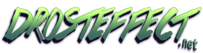
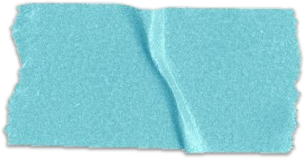
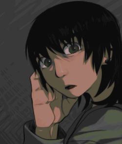
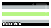
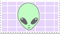
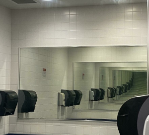

DANSC


Holi!
Mi nombre es DANSC (sí, así con mayúsculas), soy el webmaster de este sitio!
Soy una artista multidiciplinaria (gracias a mi TDA) que siempre está buscando cosas nuevas que hacer >:3 me gusta explorar con el arte en todas sus formas: dibujar, pintar, escribir... Ah y también soy intérprete.
Me gusta todo lo DIY (do it yourself = házlo tú mismo): reparar, personalizar cosas o crearlas desde 0 :D como este sitio web lol
¿Qué es drosteeffect?
Este es mi sitio web personal, portafolio y en general es como mi cuarto de juegos
En estos últimos años ha crecido cada vez más mi disgusto por las redes sociales y las dinámicas que manejan. En especial me frustra la presión que siento como persona creativa de participar en ellas.
Mi meta con drosteffect es tener un espacio más libre para mi, mi arte y todo lo que me resulta tan fascinante de la red.
¿Por qué todo está en español?
¿Qué significa drosteeffect?
Viene del inglés droste effect que signfica efecto droste. Este hace referencia a un tipo específico de imagen recursiva, o sea, que se repite dentro de si misma. En el arte también se le conoce como Mise en Abyme.
Mi ejemplo favorito de este efecto son las imágenes de dos espejos uno frente a otro :3

Tengo una larga lista de intereses...
Estos son mis favoritos
Videojuegos
- Sonic the Hedgehog
- Portal
- Stardew Valley
- Talos principle
- The Witness
- Slime Rancher
- Dragon Quest Builders
- Yume Nikki
- Bugsnax
- Vintage Story
- Subnautica
Series
- Transformers (Prime, Beastwars, Armada, Cyberverse)
- Owl House
- The Amazing Digital Circus
- Dead Dead Demon's Dededede Destruction
- Pluto
- Kino's Journey
- Girls' Last Tour
- Dungeon Meshi
- TMNT(2003,2012,2018)
Películas
- Atlantis:El Imperio Perdido
- Paprika
- Ventajas de ser Invisible (Perks of Being a Wallflower)
- Soy Frankelda
- Perfect Days
Cómic / Manga
- Transformers 2005 IDW continuity
- Sonic the Hedgehog IDW
- TMNT IDW 2011
- Las Flores del Funeral
MISC
- Gorillaz
- Homestuck
- Ugly Dolls
- Proyectos transmedia
- Web Independiente
- Arte local
- Evolución especulativa
- Paleontología
- Entomología
- Botánica
- Solarpunk
- Robots
Quisiera tener más tiempo libre para todas las cosas que me gusta hacer T-T